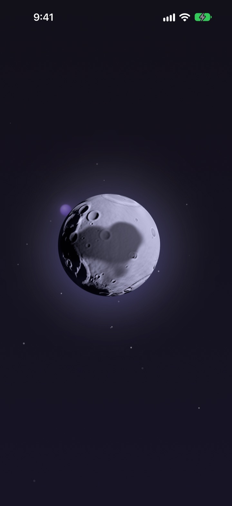
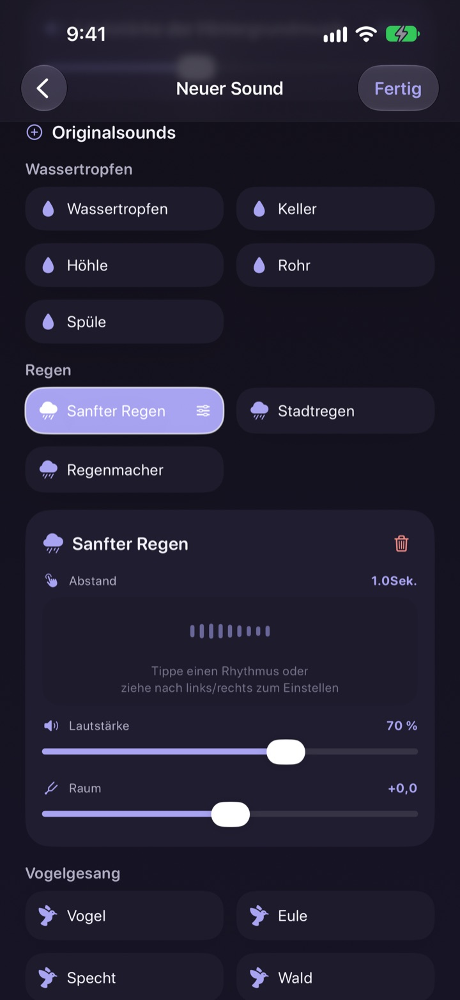
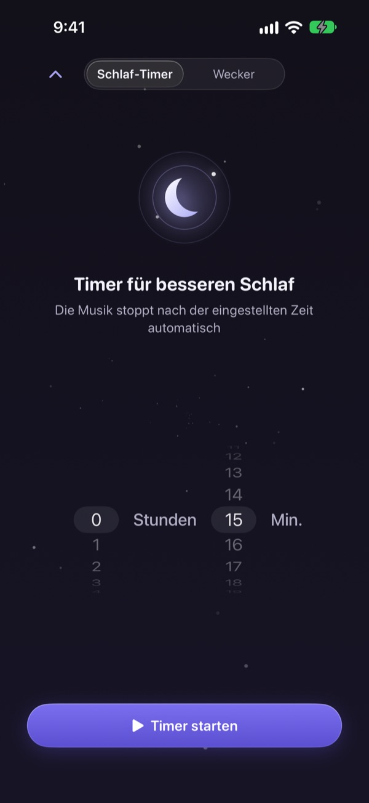
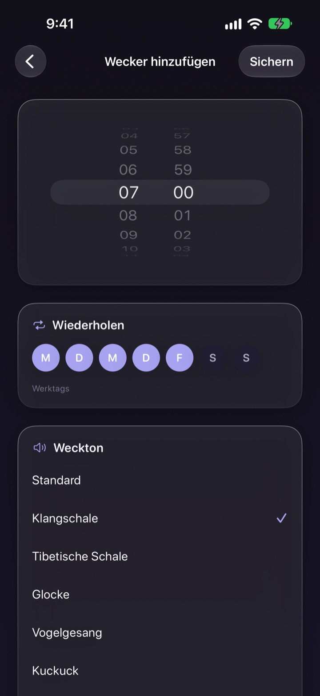
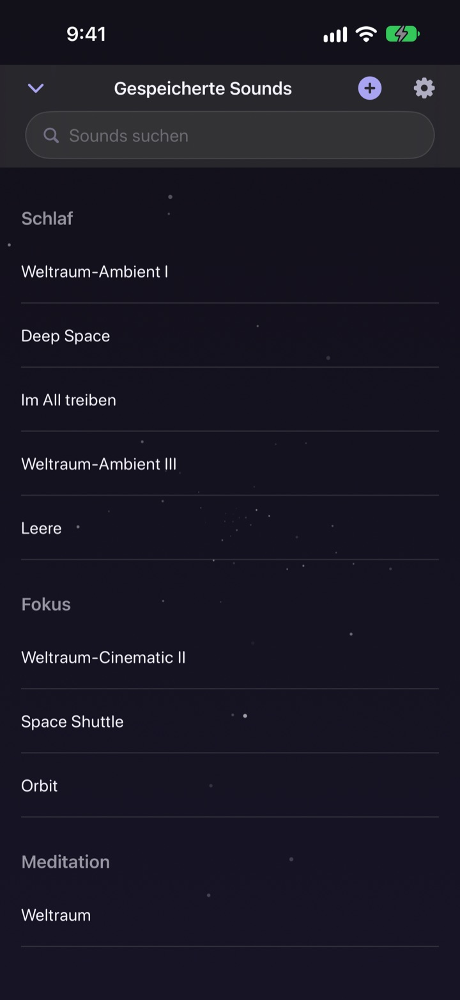

Verbring nicht die Nacht
mit der Suche nach dem Klang
Leg Regen, Wassertropfen und eine Klangschale einmal zu deinem eigenen Klang übereinander. Ab der nächsten Nacht reicht ein Tipp auf den Mond.
Alle Klänge kannst du kostenlos hören. Für iPhone und iPad.

Schon mal eine Stunde gebraucht, bis du etwas zum Einschlafen gefunden hast?
Der Regen ist zu eintönig, die Wellen zu laut, und mitten im Video kommt Werbung. Mit Dalbit legst du deine Lieblingsklänge selbst übereinander, bis es genau für dich passt, und hast das Ergebnis hinter einem einzigen Mond.
Bau deinen Klang aus Ebenen
Staple Regen, Wassertropfen, Vogelgezwitscher und Klangschalen. Stell für jede Ebene Lautstärke, Häufigkeit und die Richtung ein, aus der sie kommt, und leg Wellen oder Klavier als Hintergrundmusik darunter.
Gib der Mischung einen Namen, speichere sie und hol sie jede Nacht wieder hervor.

Wird leise, ohne dich zu wecken
Der Schlaf-Timer schneidet den Klang nie einfach ab. Er wird langsam leiser, damit dich das Ende nicht wieder aufweckt.
Der Klang läuft bei ausgeschaltetem Bildschirm und in anderen Apps weiter, und lässt du alles in Ruhe, wird der Bildschirm von selbst dunkler.

Morgens sanft geweckt
Stell Wecker mit Klangschale, tibetischer Klangschale, Vogelgezwitscher oder Kuckuck und wiederhole sie an den Wochentagen deiner Wahl.

Ein Mond für alles
Tipp auf den Mond zum Abspielen, noch einmal zum Pausieren. Wisch zur Seite für einen anderen Klang, nach oben für den Schlaf-Timer, nach unten für deine gespeicherten Klänge.
Gefällt dir ein Klang, halte den Mond gedrückt, um ihn zu den Favoriten hinzuzufügen.

In drei Schritten startklar
- 1
Tipp auf den Mond
App öffnen, auf den Mond tippen, und es klingt sofort.
- 2
Wisch zur Seite
Wisch weiter, bis ein Klang passt.
- 3
Timer stellen, hinlegen
Wisch nach oben, wähl eine Zeit, danach blendet der Klang langsam aus.
Was der Mond kann
- Tippen
- abspielen, pausieren
- Zur Seite wischen
- nächster Klang
- Nach oben wischen
- Schlaf-Timer und Wecker
- Nach unten wischen
- gespeicherte Klänge
- Gedrückt halten
- zu Favoriten hinzufügen
Pausieren und Fortsetzen geht auch über die Wiedergabesteuerung auf dem Sperrbildschirm.
Hören ist kostenlos. Premium ist zum Mehr-Erstellen.
Kostenlos
- Alle Klänge abspielen
- Klänge zu eigenen Mischungen schichten
- Bis zu drei Mischungen speichern
- Schlaf-Timer, der langsam ausblendet
- Sanfte Weckerklänge
- Favoriten
Dalbit Premium
- So viele eigene Mischungen erstellen und speichern, wie du willst
Monatliches, automatisch verlängertes Abo mit kostenlosem Probezeitraum
Das Abo verlängert sich automatisch, wenn du es nicht mindestens 24 Stunden vor Ende des aktuellen Zeitraums kündigst. Nach dem kostenlosen Probezeitraum wird es abgerechnet. Es gelten die Standard-Nutzungsbedingungen von Apple (EULA).
Häufige Fragen
Wie spiele ich Klänge ab und wechsle sie?
Tipp auf den Mond im Startbildschirm der App zum Abspielen und noch einmal zum Stoppen. Wisch zur Seite für einen anderen Klang, nach oben für den Schlaf-Timer und nach unten für deine Mediathek.
Stoppt der Klang, wenn der Bildschirm ausgeht?
Nein. Er läuft bei ausgeschaltetem Bildschirm und in anderen Apps weiter. Zum Stoppen tippst du noch einmal auf den Mond oder nutzt die Steuerung auf dem Sperrbildschirm.
Was passiert, wenn der Schlaf-Timer abläuft?
Der Klang bricht nicht plötzlich ab, sondern wird nach und nach leiser und stoppt dann, damit du nicht aufwachst.
Mein Wecker klingelt nicht.
Beim ersten Wecker fragt die App nach der Erlaubnis für Wecker. Prüf unter Einstellungen > Dalbit, ob sie aktiviert ist.
Wo werden meine Mischungen gespeichert?
Deine Mischungen, Wecker und Einstellungen bleiben nur auf diesem Gerät. Wenn du die App löschst, sind sie auch weg.
Was kann ich kostenlos nutzen?
Alle Klänge abspielen, sie übereinanderlegen und bis zu drei eigene Mischungen speichern. Schlaf-Timer und Wecker sind ebenfalls kostenlos. Mit Premium fällt die Begrenzung der Mischungen weg.
Wie kündige ich mein Abo?
Geh zu Einstellungen > Apple Account > Abonnements, wähl Dalbit und kündige. Ohne Kündigung mindestens 24 Stunden vor Ende des aktuellen Zeitraums verlängert es sich automatisch.
Neues iPhone, und das Abo ist weg.
Melde dich mit demselben Apple Account an, öffne in Dalbit den Abo-Bildschirm und tippe auf „Käufe wiederherstellen“.
Wie melde ich einen Fehler oder schlage eine Funktion vor?
Nutze „Feedback senden“ in den Einstellungen der App oder schreib uns an die Adresse unten. Wir antworten in der Regel innerhalb weniger Tage.
Fragen oder Ideen? Schreib an mizzking75@gmail.com.